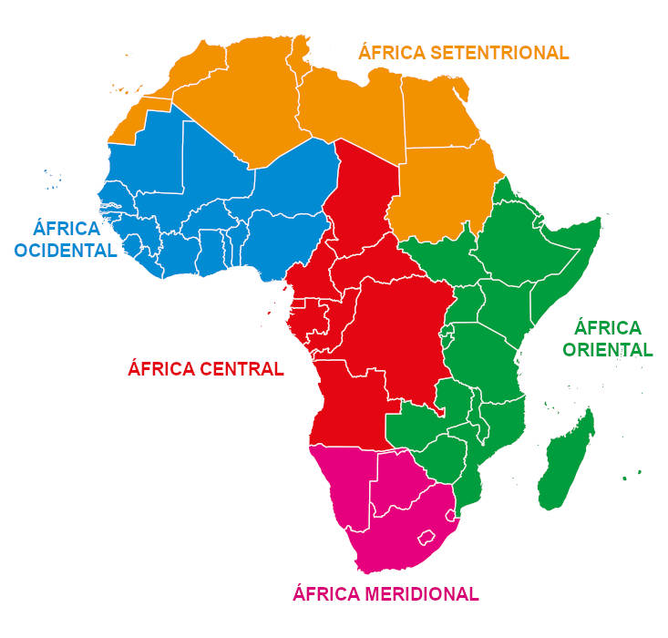
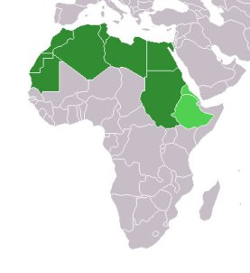
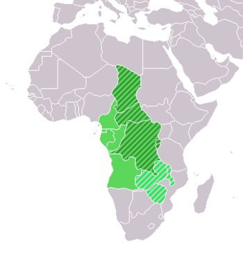
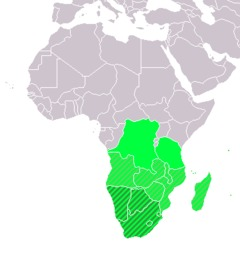
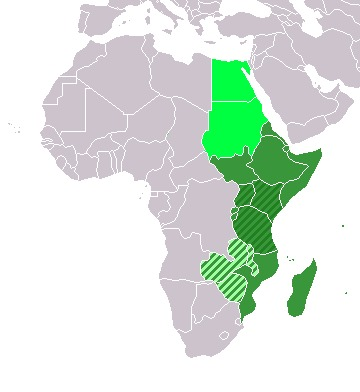
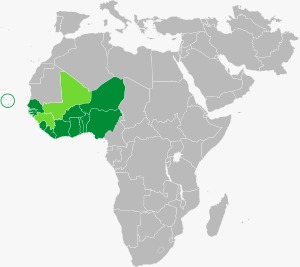

Mapa

Mapa da África

África Setentrional
A região da África Setentrional, conhecida também como Norte da África, correspondendo às áreas de países como Líbia, Argélia, Egito, Sudão, Marrocos e Tunísia. Essa região encontra-se próxima ao Mar Mediterrâneo, e nas regiões de maior umidade concentram-se o maior número de habitantes. Juntos, os países dessa porção do continente fazem parte da Liga Árabe — organização regional entre países árabes fundada em 1945.

África Central
A região da África Central corresponde às áreas dos países República Democrática do Congo, Chade, Gabão, República do Congo, Camarões e Angola, entre outros. É caracterizada por ter como limite o Oceano Atlântico, localizado a oeste e a leste, as regiões montanhosas. Além disso, é banhada por diversos rios, possuí temperaturas altas, a umidade do ar é elevada, o clima tropical é predominante da região e há presença das savanas.

África Austral
A região da África Meridional, também conhecida como África Austral, encontra-se na porção sul do continente africano. Abrange os territórios de países, como Zimbábue, África do Sul e Botsuana. Essa região é limitada pelo Oceano Índico na porção leste e pelo Oceano Atlântico na porção oeste. Sua economia destaca-se pelos minérios, como o ouro e o cobre, e também pela agricultura, com o cultivo de café, fumo e cana-de-açúcar.

África Oriental
A região da África Oriental encontra-se na porção leste do continente africano e corresponde aos territórios dos países Etiópia, Quênia, Sudão do Sul, Tanzânia, Somália, Zimbábue, Uganda, Moçambique, Eritréia, Ilhas de Madagascar, entre outros. A África Oriental localiza-se especificamente entre a região da Bacia Hidrográfica do Congo e o Oceano Índico. Essa é uma das regiões de maiores problemas sociais.

África Ocidental
A região da África Ocidental encontra-se a oeste do continente africano e corresponde aos territórios dos países Nigéria, Níger, Mali, Senegal, Mauritânia, Gana, Cabo Verde, Guiné-Bissau, Guiné, Libéria, Serra Leoa, etc. Essa porção da África encontra-se entre o deserto do Saara e o Golfo da Guiné. Nas regiões próximas ao Saara, há menor concentração populacional devido às condições climáticas que não favorecem o seu desenvolvimento.